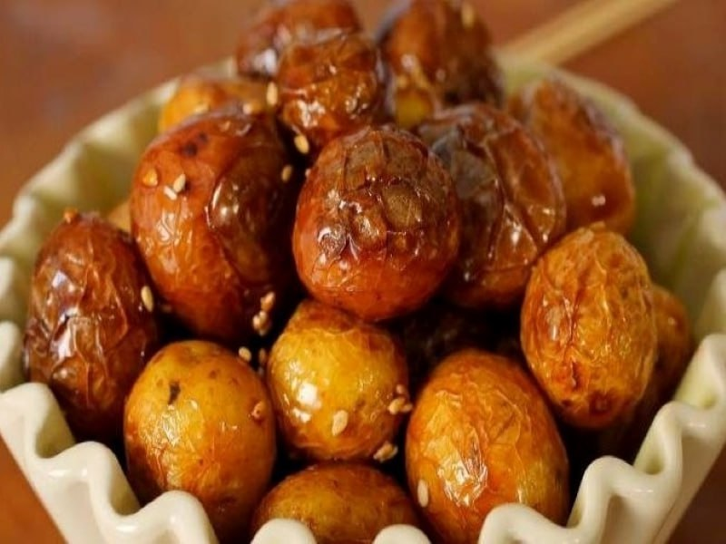

Жареная молодая картошка в медово-соевом соусе

Ингредиенты:
• Картофель молодой (мелкий);
• Соевый соус;
• Чеснок;
• Мёд;
• Перец красный острый молотый;
• Масло растительное;
• Кунжут (семена).
Энергетическая ценность картошки составляет 192 кКал